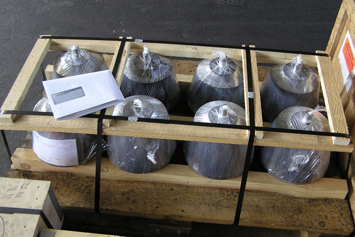

1. Offerten.
Offerten die keine Bindefrist enthalten, sind unverbindlich.
2. Vertragsabschluss.
Der Vertrag gilt als abgeschlossen, wenn wir nach Eingang einer Bestellung ihre Annahme schriftlich bestätigt haben. Mündliche Vereinbarungen haben nur Gültigkeit, sofern sie schriftlich bestätigt worden sind.
3. Umfang und Ausführung der Lieferung.
Für Umfang und Ausführung der Lieferung ist unsere Bestellbestätigung massgebend. Material oder Leistungen, die darin nicht enthalten sind, werden besonders berechnet. Konstruktionsänderungen gegenüber der Bestellungsbestätigung sind zulässig, sofern die Ware die gleichen Funktionen erfüllt. Wir haben jedoch keine Verpflichtung, derartige Konstruktionsänderungen an bereits gelieferter Ware vorzunehmen.
Abrufaufträge: Bestellungen ohne feste Lieferterminangaben müssen innert Jahresfrist ab Bestellungsbestätigung abgerufen werden. Restbestände, für welche nach Ablauf dieser Frist noch kein Abruf vorliegt, werden je nach Wunsch des Bestellers entweder ausgeliefert und fakturiert oder unter Verrechnung sämtlicher aufgelaufener nicht gedeckter Kosten bestmöglich verwertet.
4. Technische Unterlagen.
Technische Unterlagen wie Zeichnungen, Beschreibungen, Abbildungen und dergleichen sind, falls sie nicht ausdrücklich als bindend bezeichnet worden sind, nur annähernd massgebend; wir behalten uns die notwendigen Änderungen vor.
Technische Unterlagen sind vom Besteller vertraulich zu behandeln. Sie bleiben unser Eigentum und dürfen weder kopiert noch vervielfältigt noch Dritten in irgendeiner Weise zur Kenntnis gebracht noch zur Anfertigung der Ware oder von Bestandteilen verwendet werden. Sie dürfen für die Wartung und die Bedienung benützt werden. Sämtliche Unterlagen zu Offerten, die nicht zu einer Bestellung führen, sind uns auf Verlangen zurückzugeben.
5. Vorschriften am Bestimmungsort.
Der Besteller hat uns die gesetzlichen, behördlichen und anderen Vorschriften aufmerksam zu machen, die bei Erfüllung des Vertrages zu beachten sind.
6. Preise.
Unsere Preise verstehen sich, soweit nicht anders vermerkt, ohne Mehrwertsteuer, Verpackung, Transport, Versicherung, Montage, Installation und Inbetriebnahme.
Wir behalten uns Preisanpassungen nach Vertragsabschluss vor:
a) soweit nachträglich eine Lieferfristverlängerung aus einem der in Ziffer 9 genannten Gründe erfolgt.
b) soweit das Material oder die Ausführung Änderungen erfahren, weil die uns vom Besteller überlassenen Unterlagen den tatsächlichen Verhältnissen nicht entsprochen haben oder unvollständig waren.
c) bei 3 Monate überschreitenden Lieferfristen.
Unsere Preise sind für Nachbestellungen unverbindlich. Für gedruckte Preislisten und Kataloge behalten wir uns das Recht von Änderungen jederzeit vor.
7. Zahlungsbedingungen.
Die Zahlungsfrist beträgt 30 Tage ab Rechnungsdatum. Die Zahlungen haben nach den in der Rechnung angegebenen Modalitäten und wo nichts anderes vereinbart in Schweizerfranken zu erfolgen. Nicht schriftlich vereinbarte oder auf der Rechnung nicht erwähnte Skontoabzüge sowie andere Kürzungen des Rechnungsbetrages, sei es infolge Bemängelung der gelieferten Ware oder aus sonstigen Gründen, werden von uns nicht anerkannt.
Hält der Besteller die Zahlungsfrist nicht ein, hat er ohne besondere Mahnung vom Zeitpunkt der Fälligkeit an einen Verzugszins zu einem Satze zu bezahlen, der 5% über dem jeweiligen Diskontsatz der Schweizerischen Nationalbank liegt. Sämtliche Inkassospesen gehen zu Lasten des Bestellers.
8. Eigentumsvorbehalt.
Die von uns gelieferte Ware bleibt bis zur vollständigen Bezahlung unser Eigentum und wir sind zur Eintragung ins Eigentumsvorbehaltsregister berechtigt, solange die Zahlung nicht vollständig geleistet ist.
9. Lieferfrist.
Die Lieferfrist beginnt, sobald der Vertrag abgeschlossen ist und die technischen Punkte vollständig bereinigt sind. Die Lieferfrist kann angemessen verlängert werden:
a) wenn uns die Angaben, die wir für die Ausführung der Bestellung benötigen, nicht rechtzeitig zugehen, oder wenn sie der Besteller nachträglich abändert.
b) wenn Zahlungsfristen nicht eingehalten werden.
c) wenn Hindernisse auftreten, die ausserhalb unseres Einflussbereiches liegen, ungeachtet, ob diese Hindernisse bei uns, dem
Besteller oder bei einem Dritten entstehen. Solche Hindernisse sind beispielsweise Epidemien, Mobilmachung, Krieg, Aufruhr, Streik, erhebliche Betriebsstörungen, Unfälle, Arbeitskonflikte, verspätete oder fehlerhafte Zulieferung der nötigen Rohmaterialien, Halb- oder Fertigfabrikate, behördliche oder sonstige Massnahmen irgendwelcher Art, Transporthindernisse, Naturereignisse.
Allfällige Verspätungen unserer Lieferung geben dem Besteller weder das Recht auf Rücktritt vom Vertrag noch Anspruch auf Ersatz von direktem oder indirektem Verzugsschaden. Konventionalstrafen werden nicht anerkannt, sofern wir ihnen nicht ausdrücklich schriftlich zugestimmt haben.
10. Annullierung und Lagerung.
Bei Annullierung von Bestellungen sind wir berechtigt, die aufgelaufenen Kosten dem Besteller zu verrechnen. Ware, die nach Ablauf der Lieferfrist auf Wunsch des Bestellers nicht versendet werden kann, wird von uns in Rechnung gestellt. Im Weiteren gilt Ziffer 7. Die Lagerung der Ware geschieht auf Rechnung und Gefahr des Bestellers.
11. Prüfung und Abnahme der Lieferung.
Der Besteller hat die Lieferung innert 10 Tagen nach Erhalt zu prüfen und uns allfällige Mängel, für die wir auf Grund unserer vertraglichen Verpflichtungen verantwortlich sind, unverzüglich schriftlich bekannt zu geben. Unterlässt er dies, so gilt die Liefe- rung als genehmigt.
Erweist sich die Lieferung als nicht vertragsgemäss, so hat uns der Besteller die Ware umgehend zur Behebung der Mängel auf eigene Rechnung und Gefahr zuzustellen. Weitere Rechte des Bestellers wegen mangelhafter Lieferung, insbesondere auf Schadenersatz und Rücktritt vom Vertrag, sind ausgeschlossen.
12. Übergang von Nutzen und Gefahr.
Nutzen und Gefahr gehen spätestens mit dem Abgang der Lieferung ab Werk auf den Besteller über, und zwar auch dann, wenn die Lieferung franko, cif, fob oder unter ähnlichen Klauseln erfolgt.
13. Garantie.
Wir verpflichten uns, während der Garantiezeit auf schriftliche Aufforderung des Bestellers hin alle Teile unserer Lieferung, die nachweisbar infolge schlechten Materials, fehlerhafter Konstruktion oder mangelhafter Ausführung schadhaft oder unbrauchbar werden, nach unserer Wahl auszubessern oder zu ersetzen. Hierzu sind uns die schadhaften oder unbrauchbaren Teile für uns spesenfrei zuzustellen. Ersetzte Teile werden unser Eigentum.
Verlangt der Besteller, dass vertraglich zugesicherte Garantiearbeiten am Standort der Ware ausgeführt werden, so gehen alle daraus entstehenden Mehrkosten zu seinen Lasten. Weitere Rechte des Bestellers wegen mangelhafter Lieferung, insbesondere auf Schadenersatz und Rücktritt vom Vertrag, sind ausgeschlossen bzw. richten sich nach den Bestimmungen einer allfälligen Versicherung.
Die Garantiezeit beträgt 12 Monate ab Rechnungsdatum. Für ersetzte Teile beginnt die Garantiezeit neu zu laufen; sie endet spätestens 24 Monate ab Rechnungsdatum. Von der Garantie ausgeschlossen, sind Schäden infolge natürlicher Abnützung, mangelhafter Wartung, Missachtung von Betriebsvorschriften, falscher Bedienung, übermässiger Beanspruchung, ungeeigneter Betriebsmittel, chemischer oder elektrolytischer Einflüsse sowie anderer Gründe, die wir nicht zu vertreten haben.
Die Garantie erlischt, wenn der Besteller oder Dritte ohne unsere schriftliche Zustimmung Änderungen oder Reparaturen an der Lieferung vornehmen, oder wenn der Besteller nicht umgehend geeignete Massnahmen trifft, damit der Schaden nicht grösser wird.
Macht der Besteller bis zum Ablauf der Garantiefrist nicht bestimmte Ansprüche aus der Garantie schriftlich geltend, so sind wir unserer Verpflichtungen aus derselben enthoben.
14. Anlieferung / Retouren
Reparatur-Anlieferungen und Retouren sind für uns kostenfrei (Frei Haus, verzollt) anzuliefern und werden nur nach vorgängiger Absprache angenommen.
15. Haftung.
Wir verpflichten uns, die Lieferung vertragsgemäss auszuführen und unsere Garantiepflicht zu erfüllen. Jede weitere Haftung gegenüber dem Besteller für irgendwelche Schäden ist wegbedungen. Insbesondere haften wir nicht für indirekte oder Folge schäden wie beispielsweise entgangenen Gewinn oder Ansprüche Dritter.
16. Gerichtsstand und anwendbares Recht.
Gerichtsstand für den Besteller und für uns ist Lachen. Es steht uns aber auch das Recht zu, das am Sitze des Bestellers zuständige Gericht anzurufen. Das Rechtsverhältnis untersteht dem schweizerischen Recht.
17. Gültigkeit.
Diese allgemeinen Lieferbedingungen gelten in allen Punkten, welche nicht gegenseitig schriftlich in anderer Weise geregelt sind. Besondere Bedingungen des Bestellers, die mit diesen allgemeinen Lieferbedingungen im Widerspruch stehen, gelten nur, wenn wir uns schriftlich damit einverstanden erklärt haben.
Die offizielle, rechtsgültige Fassung dieser Lieferbedingungen ist in deutscher Sprache. Übersetzungen in andere Sprachen sind nicht rechtsverbindlich.
Altendorf, 1. 5. 2014, AKIM AG